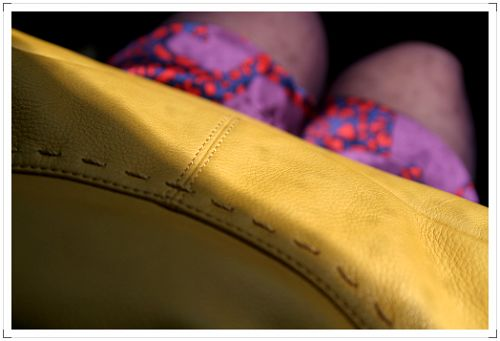
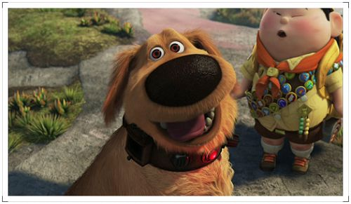
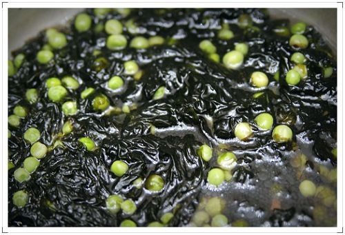

周末看了两部甩片，当然无论再经典都是甩片。最近睡眠很好，在两次差不多的梦境里热火朝天地杀虫子...解梦的说这是生活幸福的象征，真的吗？这琐碎而平淡的就是幸福？
@5月10日母亲节。

星期天莫愁路上的基督教堂里正在举行婚礼，婚车占用了机动车道停了好长一溜。隆重的在教堂门口布置了白色的纱帘和花朵，一定是基督教徒才会在教堂里举办婚礼吧？终于弄明白天主教信奉的是耶稣妈妈，基督教信奉耶稣，即前者信奉母亲，后者信奉儿子。
这天一个基督徒老奶奶跟我说起她养的猫，养了十几年，是只会说两句人话的猫。
***每次猫咪干了坏事，奶奶埋怨它，猫咪坐着不吭声，听奶奶讲完了，回答一句“没有”，拖着长长的尾音，开始的时候把奶奶吓一跳；
***这只叫作happy的猫咪与奶奶对视着，奶奶唤“happy”猫咪回答“唉”，奶奶反复唤它，猫咪反复回答“唉”...次数多了估计猫咪烦了，只张嘴不发音的答应奶奶，呵呵~奶奶的女儿带猫咪去宠物医院看病，把它放在包里，到了医院打开包唤它，猫咪连答三个“唉唉唉”，神了！**长春老猫说人话**
***这位奶奶是金陵大学（南大前身）校长的女儿，虔诚地基督教徒。我认识几个基督徒，他们的面孔比大多数人看上去宁静祥和，难道世间的浮躁都被宗教过滤了？据说莫愁路上的这家基督教堂是奶奶家族于30年代捐款建造的。

天气有多热呢？看看luke在空调房间里四脚朝天的快活样儿就知道了。散步回来的luke总会拣最阴凉的地方肚皮贴地趴着，如果开空调它一定是趴在空调口下面。热啊，一下子就热了，5月份就得时不时的开开空调，能想象出有多热吧？最高温度34度啦~好在今晚上要下雨，如果天气预报准确的话，好在周末没洗车，嘿嘿~

周末的晚上带Luke上山玩，它趴在开着的车窗上，整个脑袋露在外面兴奋地朝前张望，两只大耳朵被风吹地飘起来象两只翅膀，这小小飞行狗的英姿飒爽...甭提有帅！可惜吹了我一脸狗毛和几滴快乐的口水....Luke要是被画出来应该是下图这个样子，快乐的帅狗狗。

中午烧了一个青豆紫菜汤，放了些麻油。对呀~烧饭的时候我也好快乐，奇怪了？每每闷闷不乐的时候都会往生理周期上追究原因。这跷跷板似的情绪变化莫测。

********************DRESS BLOG********************


10 Responses to “这快乐的...”
2009-05-11
好丰富的周末啊，一个心满意足的假期大概首先要有一颗热爱生活，积极乐观的心。菜烧得素淡，也很有新意。外地的朋友大概猜不到甩片是啥意思吧，呵呵～～～
2009-05-11
《Up》的截图？全美公映好像是这个月底哦。这边不知何时才出来了。。。期待中。
2009-05-11
这身衣服我喜欢。紫色我的最爱。
2009-05-11
34 degree? too hot in May. Hope you and luke alright
2009-05-11
鞋子是AK的吧，我也有一双哦，黑色的：）
2009-05-11
漂亮的淡金色~
2009-05-11
甩片？什么意思啊：）
2009-05-12
甩片就是无厘头、搞笑但绝不是幽默…类似周星弛式电影。
2009-05-13
这身很漂亮,赞一个
2009-05-13
我喜欢这身衣服～～～漂亮！
Leave A Reply
存档只读，评论已关闭。